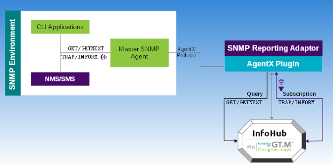
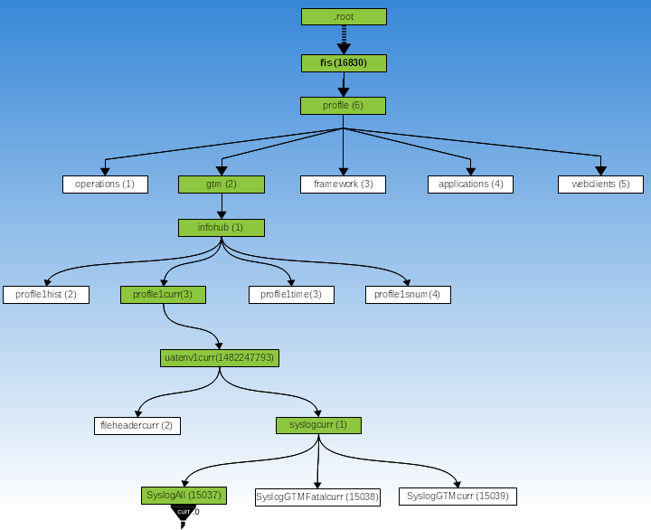

The FIS GT.M SNMP Plugin is a ready-to-use subagent that makes information from InfoHub available for monitoring via SNMP. It uses the Internet standard (RFC-2741) AgentX protocol to communicate with an SNMP Master Agent. Because FIS tests the SNMP Plugin with Net-SNMP ( http://www.net-snmp.org) as the SNMP Master Agent, Net-SNMP is Supported and other SNMP Master Agents are Supportable but not Supported.
The SNMP Plugin is a Reporting Adaptor that has both Query and Subscriber relationships with InfoHub. The following diagram illustrates how the SNMP Plugin interacts with InfoHub to handle requests for data retrieval and notifications from an SNMP environment.

A data retrieval request initiated from CLI applications such as snmpget/snmpgetnext goes to the Master SNMP Agent using the SNMP protocol. The Master SNMP Agent uses the AgentX protocol to communicate the request to the SNMP Plugin which uses its Query relationship with InfoHub to retrieve the requested data and sends it to back to the Master SNMP Agent. CLI applications such as snmptrapd set up a listener for receiving notifications. When a configured condition occurs on InfoHub, the SNMP Plugin uses its Subscriber relationship to obtain notification details and sends them to the SNMP Master Agent which then sends it to the listener waiting for notifications.
In an SNMP environment, data values are organized in a tree structure called an MIB (Management Information Base). The MIB hierarchy starts with a nameless root and extends to specific areas of information. Typically, an organization has several MIB modules connected hierarchically with each other. Each object is addressed using a fully qualified OID starting from the nameless root. An OID can be represented in numeric or mnemonic form. A fully qualified OID in numeric form looks like:
.1.3.6.1.4.1.16830.6.2.1.2.1.1482247793.1.314.0
The same OID in mnemonic form might looks like:
.iso.org.dod.internet.private.enterprises.fis.profile.gtm.infohub.profile1curr.uatenv1curr.syslogcurr.SyslogAllcurr.0
The following diagram illustrates the fully qualified OID .1.3.6.1.4.1.16830.6.2.1.2.1.1482247793.1.314.0 in an MIB that contains an InfoHub MIB module sub-tree. The numeric forms are enclosed in brackets ().

The non-white boxes represent the OID sub-subtree in the InfoHub MIB module. In the illustration, the InfoHub MIB module hierarchy starts from 16830.6.2 where:
fis (16830) identifies the enterprise FIS.
profile (6) identifies the FIS Profile product. Within FIS, all OIDs below .16830.6. are reserved for use by the FIS Profile family of products.
gtm (2) identifies GT.M. OIDs below 16830.6.2 are for sub-trees of InfoHubs. The depth of each InfoHub OID sub-tree can vary depending on its InfoHub Configuration File.
infohub (1) represents the level for InfoHubs.
profile1curr (2) represents the current View of an instance of one InfoHub.
uatenv1curr(1482247793) represents the current View of the Publisher.
syslogcurr (1) represents the current View of the FileLine Gleaner for the system log.
SyslogAllcurr (15037) is a grouping that represents all messages filed in the system log.
InfoHub maintains the current and historic data values of monitored elements in the form of Views. InfoHub provides four Views a?? curr, hist, time, and snum. Views are different ways of looking at the current and historic data values of an object. A View is like a filter applied on an object to narrow down to only those data values that you want to see from an InfoHub. Every object under an InfoHub has four stems each representing a View. All objects under a stem have the same View Name as the suffix. The last (leaf) node of each stem is the monitored object for which you need to specify a parameter called an Object Index.
The objective of stemming of the same object into four Views is to comply with the namespace restriction that all individual pieces of an OID in an MIB to be unique. The non-white boxes in the OID illustrate a fully qualified mnemonic OID of the most recent (curr) object stored on the system log and the curved connectors denote stemming into Views. Notice how each object under .profilecurr has the curr suffix and the leaf node requires specifying an Object Index[2].
To obtain the current or historic data of any monitored element, you need to perform a GET request (refer to "Performing a GET Request") for either the fully qualified OID as illustrated in the OID diagram or just the leaf node (for example, .infohubprofile1uatenv1SyslogAllcurr.0).
The four Views are as follows:
|
View Name (mnemonic suffix) |
Object Index |
Description |
|---|---|---|
|
curr |
0 |
The curr View provides the latest recorded data value of an object. The curr View can take only 0 as the Object Index. 0 indicates the current value. For example, a GET request for the infohubprofile1uatenv1SyslogGTMcurr.0 object retrieves its current. |
|
hist |
0..n |
The hist View provides a succession of data values that were stored for an object. It can take 0 to n as the Object Index where 0 is the latest recorded value and n is a prior ancestor. n is always in reverse chronological order. hist.0 is the latest and hist.1 is the value that was stored immediate before hist.0. The hist View always returns data values relative to the latest recorded information, that is, hist.0 value becomes hist.1 as soon as it gets replaced with a new value. Assuming no new items arrive between the two GETs, hist.0 and curr.0 for the same OID return the same information - that is: the latest recorded data value. |
|
snum |
1..s |
The snum View provides the data value of an object based on the sequence number that InfoHub used for storing in the database. The data value returned with the snum View can be used as a starting point to identify values stored after a sequence number. For example, a GETNEXT request for infohubprofile1uatenv1SyslogGTMsnum.358153 retrieves the data value that InfoHub stored using the sequence number 358154. The time View relies on the snum View. Note that once the sequence number of the data value of a monitored element is set, it does not change even when that element gets purged or gets succeeded with a new data value. On the other hand, the curr and hist Views change whenever a new data value is set for an element. Always bear in mind the distinction between curr/hist and snum/time Views when you retrieve a data value based on the OID returned with a notification. |
|
time |
t |
The time View returns the mnemonic OID and its sequence number stored on Infohub at the time specified with t. t is the time is seconds since the last UNIX epoch. For example, if an administrator is investigating an incident that occurred around 11/01/2013 14:26:00, the value of t in infohubprofile1uatenv1SyslogGTMtime.t should be specified as: `date --date "11/01/2013 14:26:00" +%s` It is important to note that t is not the actual time of the incident but of the time when the information was stored on InfoHub. This time View example returns mnemonic OID and sequence number like infohubprofile1uatenv1SyslogGTMsnum.358153 which can be used with a series of GET and GETNEXT requests to retrieve data values stored around the time t. While the time View provides granularity up to one second, the snum View provides in-depth granularity by retrieving data values based the sequence in which they were stored on the InfoHub. |